Software Tutorials
TUTORIAL #9: Inputs
TEJ4M0
Previous Tutorial
Next Tutorial
Objective:
To create a PIC interface which uses one button input to control the speed of three LEDs flashing.
Procedure:
1. Using your pinout diagram, build your circuit as follows:
a. Connect three LEDs through 1k resistors to ground from RC2, RC3, RC4.
b. Use the following schematic to wire a push button to RA5 (Fig 9.1).
c. You should note that the schematic is somewhat counter-intuitive; it sends a HIGH when you DON`T press the button, and sends a LOW when you DO press the button. The reason for this is that interference from DC motors can cause some PICS inputs to switch from LOW to HIGH at random. If inputs are always set HIGH, then you avoid this problem.
2. Create a new project:
a. Create a new project/workspace/source file called asmButton, all saved in a new folder with the same name.
3. Add source code to the Editor window (see last page):
a. Write in your own Hardware Notes. Remember you are adding an input, so include that as well as the three outputs, specifying the port responsible (i.e. RA5).
b. Add in your own programmer`s comments that describe how the hardware is being affected (i.e. LED turns ON), rather than interpreting the code (move a literal value of 10 into the working register). Keep your comments readable, simple and to the point!
c. Add breakpoints next to all nop instructions.
d. Build it! (Ctrl + F10).
4. Setup your workspace:
a. Open MPLAB SIM, organize windows as shown in Fig 9.2:
5. Open the Stimulus window (for simulating inputs):
a. Select Debugger>Stimulus>New Workbook.
b. Select the Asynch tab if it's not already in view.
c. Add RA5 and comments for each, resizing window as shown below in Fig 9.3:
d. Click on "Save" on the window. Call it asmButton.sbs and save it in the asmButton folder.
6. Resize and position the Stimulus Controller in the top right hand corner of your screen (Fig 9.4):
7. Verify Configuring SFRs (Fig 9.5):
a. Use the "Step Into" feature of the simulator (F7) to verify that your SFR registers. (CMCON0, ANSEL, TRISA, TRISC) in the Watch window are set to the correct values
b. Stop "stepping" when you reach the first nop instruction.
c. Notice that TRISA is added, and shows two bits that are 1 (RA5 is taught to be an INPUT, and RA3 is always an INPUT) and the rest are 0 (RA0, RA1, RA2, RA4 are therefore OUTPUTS).
8. Simulate LED flashing slowly (part 1) (Fig 9.5):
a. With the PC counter pointed at the first nop instruction, fire RA5 HIGH (flash slowly) by clicking on the Fire (>) button for "RA5 Set High" in the Stimulus Controller.
b. Press "RUN" once. You should notice the PC pointer has now jumped to the subroutine flashSlow, stopping at the breakpoint at nop.
a. Observe the three different windows:
• Watch window:
o RA5 is HIGH (flash slowly).
o RC4:RC2 are all HIGH (3 LEDs ON).
• Stopwatch window:
o Time (Secs) is about 2 seconds (recall that the extra 16 microseconds (.000016) is a result of the execution of the instructions.
o This time represents the time the LED is ON for.
• Output window:
o The message "RA5: flash slowly fired" indicating the button has not been pressed.
9. Simulate LED flashing slowly (part 2) (Fig 9.6):
a. Reset Stopwatch window back to 0 by pressing the Zero button.
b. Click "RUN" once, and watch the PC counter point at the next nop instruction
c. Observe the three different windows:
• Watch window:
o RA5 is still HIGH (flash slowly).
o RC4:RC2 are all LOW (3 LEDs OFF).
• Stopwatch window:
o Time (Secs) is about 2 seconds again.
o This time represents the time the LED is OFF for.
• Output window:
o The message "RA5: flash slowly fired" still shows.
d. Repeat steps a to c above and notice what happens:
• The LED turns ON and OFF at a rate of 2 seconds. This has been verified by both the Stopwatch and Watch windows
10. Simulate LED flashing quickly (part 1) (Fig 9.7):
a. Reset Stopwatch window back to 0 by pressing the Zero button.
b. With the PC counter pointed at the first nop instruction, fire RA5 LOW (flash quickly) by clicking on the Fire (>) button for "RA5 Set Low" in the Stimulus Controller.
c. Press "RUN" until the PC pointer has jumped to the subroutine flashFast, stopping at the breakpoint at nop.
d. Observe the three different windows:
• Watch window:
o RA5 is LOW (flash quickly). In other words, the button has been pressed!
o RC4:RC2 are all HIGH (3 LEDs ON).
• Stopwatch window:
o Time (Secs) is now only 20 milliseconds!
o This time represents the time the LED is ON for, and why this flashes faster.
• Output window:
o The message "RA5: flash quickly fired" now appears.
11. Simulate LED flashing slowly (part 2) (Fig 9.8):
a. Reset Stopwatch window back to 0 by pressing the Zero button.
b. "RUN" to the next instruction.
c. Observe the three different windows:
• Watch window:
o RA5 is still LOW (flash quickly).
o RC4:RC2 are all LOW (3 LEDs OFF).
• Stopwatch window:
o Time (Secs) is about 20 milliseconds again.
o This time represents the time the LED is OFF for.
• Output window:
o The message "RA5: flash quickly fired" still shows.
e. Repeat steps a to c above and notice what happens:
• The LED turns ON and OFF at a rate of 20 milliseconds. This has been verified by both the Stopwatch and Watch windows.
12. Program Your PIC and test on breadboard (don't forget resistors with your LEDs!)
a. Ensure you insert your PICKit2 correctly
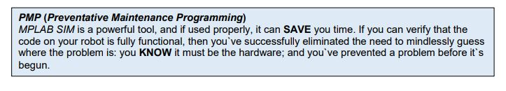
Conclusion:
1. Describe the purpose of the following instructions:
a. btfss PORTA, 5.
b. btfsc PORTA, 5.
c. call flashSlow.
d. return.
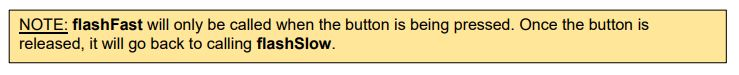
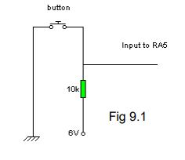
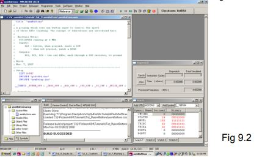
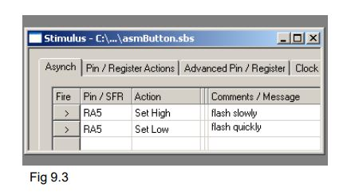
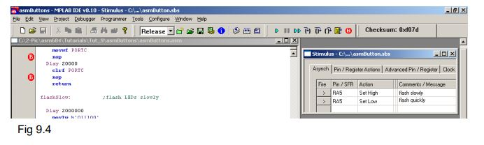
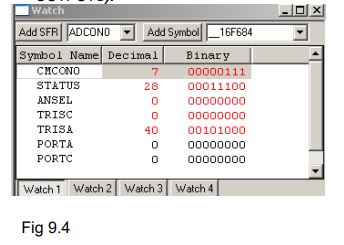
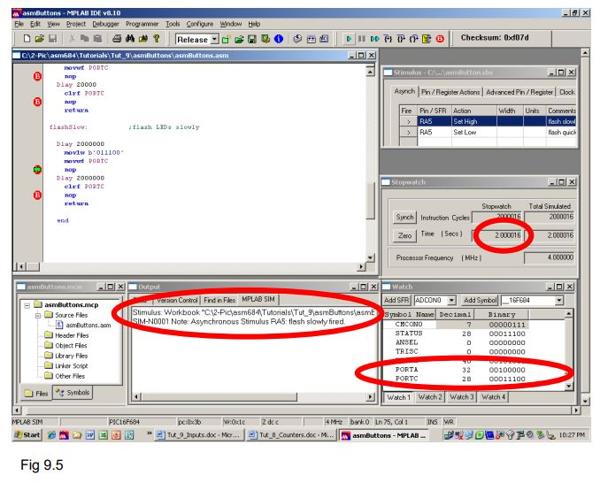
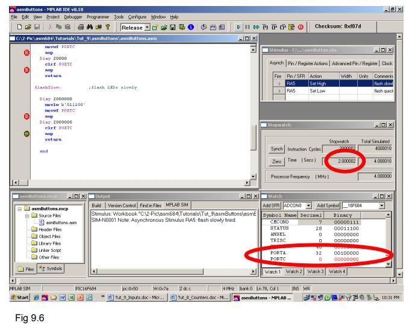
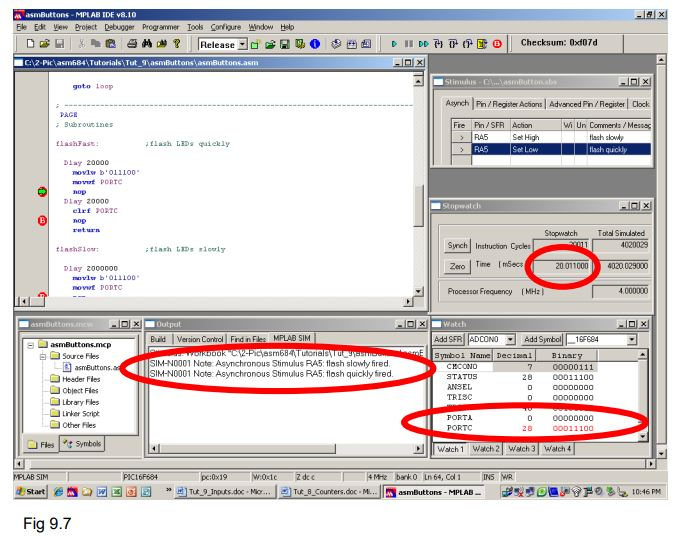
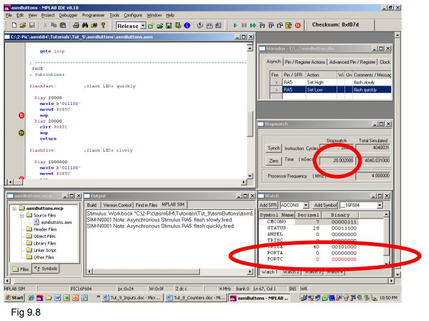
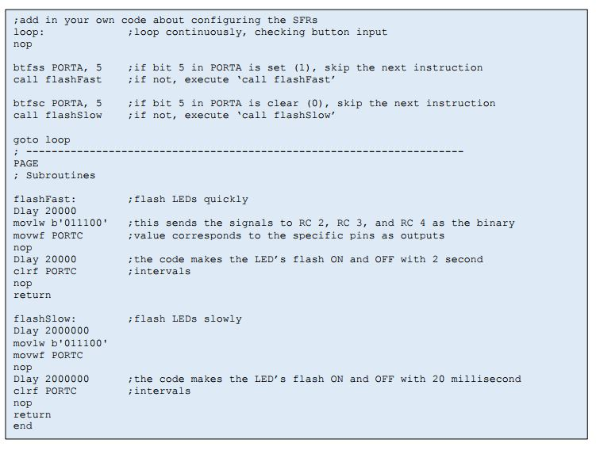